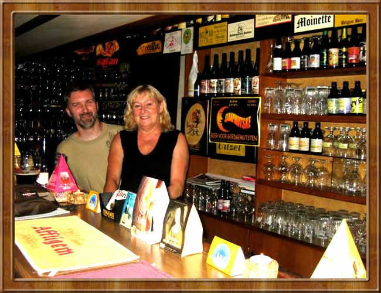
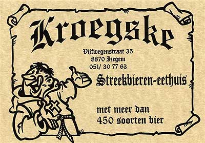

Nadine en haar echtgenoot Danny, de bezielers
van het eet-en bierhuisje Kroegske,
heten jullie van harte welkom als bezoeker
van hun website.
Het is bij ons allemaal begonnen als een hobby. Als grote
Lambiek en Geuze, Trappist, Rodenbach en Liefmans liefhebbers
en tevens verzamelaars wilden we onze passie met jullie
delen.
Op 1 Augustus 1996 was het zover en werd de stap gezet tot
het uitbaten van een klein eet-en bierhuis dat de toepasselijke
naam Kroegske meekreeg.
In de voorbije jaren hebben we onze uiterste best gedaan
een stukje van onze ziel erin te steken.....en met succes!
We werden al heel snel bekend als "the place to be"...
De regelrechte ontdekking van over de wereld en pleisterplaats
voor de echte bierliefhebber en genieter.
Ons idealisme is ontstaan uit en gegroeid door onze ervaringen
tot een vrij unieke eet-en biertempel in het hart van West-Vlaanderen.
Wat kunnen we jullie bieden ?
Een gezellige en rustige sfeer, kaarslicht en een uniek
interieur vol breweriana en aangepaste muziek van Middeleeuws,
folk, celtic rock al over the 60's,70's, van songwriters
tot blues naar jazz. 's Zomers op de tuinterras omringd
door oude emailborden en de antieke brandende kolenkachel
in de winter maakt de gezelligheid compleet. Gewoon Uniek
!
Onze Specialiteit bestaat uit de vers bereide keuken van
Nadine, die een diploma van Restauranthouder op zak heeft.
Diverse vers bereide snacks en biergerechten maken hun opwachting
voor jullie en een uitgebreide bierbijbel met meer dan
400 speciaalbieren. Deze werden voor jullie zorgvuldig
per brouwstijl gebundeld en op kaart gebracht in een vervlogen
Keltische stijl.
De enorm uitgebreide keuze aan Speciaalbieren wordt hoofdzakelijk
bij de kleinere artisanale brouwerijtjes aangekocht en de
commerciele bieren worden zoveel mogelijk vermeden.
Het gamma bestaat uit volgende brouwstijlen;
De 6 Trappisten van Belgie.
De Erkende abdijbieren.
De niet-erkende abdijbieren.
Een mooie selectie Saison bieren.
De gemengde gistings bieren zoals Oud Bruin.
Fruitbieren zoet en zuur.
Streekbieren zorgvuldig uitgekozen.
En niet te versmaden de spontaan gegiste lambiek Bieren
want deze zijn natuurlijk het paradepaardje van onze bierbijbel.
Wat wordt er van jullie verwacht ?
In ons Kroegske kan men nog
in alle rust keuvelen met z'n tweetjes of met vrienden en
kennissen zonder dat de andere aanwezigen gestoord worden.
Hier bij ons past iedereen zich aan aan iedereen. Ons publiek
houdt hier helemaal niet van het onverwachte.
Daarom wordt er ook geen luidruchtig gebral getolereerd
in onze zaak.
Om eens goed door te fuiven zijn jullie bij ons aan het
verkeerde adres. Het interesseert ons meer hoe je achteraf
onze zaak verlaat, dan het geld dat je achterover drukt.
Daarom worden er bij ons maar 5
bieren per persoon geserveerd. Hoe hoog of laag het alcoholgehalte
ook mag zijn.
Een half uur vóór het vaste sluitingsuur wordt
niets meer geschonken of bereid.
Daar er kindvriendelijke drankgelegenheden in overvloed
zijn is ons Kroegske dan ook helemaal niet geschikt en aangepast
voor baby's en peuters.
Kinderen zijn toegelaten onder toezicht ouders.
Er worden geen kinderwagens en geen huisdieren toegelaten.
Er wordt ook geen geparfumeerde tabak gerookt in de vorm
van pijp en sigaar uit respect voor de andere aanwezigen.
Dit geldt niet alleen binnen maar zowel buiten in het tuinterras.
Het
Kroegske is sedert 1 januari 2007 volledig
rookvrij!
Wie zich met onze eisen kan verzoenen, is bij ons meer dan
welkom!
De uitbaters,
Nadine en Danny
EMELGEM
Dit
is wat Engels bierkenner Tim Webb schrijft over 't Kroegke
in zijn nieuwe Good Beer
Guide to Belgium gids:
"Emelgem,
6km ESE of Roeselare off N36
STATION
Izegem [Lichtervelde – Kortrijk]
Village
in the suburban hinterland. Officially Emelgem has not existed
since it was made formally part of Izegem in 1963. However,
nobody asked the locals or told the map-makers and road sign
writers.
Hotel
tips: in Izegem, the Park***, 3 Papestraat (T 051 33 78 20;
F 051 33 78 69; www.parkhotel-izegem.be) is the brand new
business hotel next to the old Carpentier maltings, while
the Century**, 24 Nederweg (T 051 30 18 44; F 051 31 51 79)
was equally modern forty years ago.
KROEGSKE
35
Vijfwegenstraat
T
051 30 77 63
The
Guide suggests the two hotels above because although there
is no point in coming here for anything other than this café,
we suspect that once you have arrived you will not be wanting
to leave. To find it from Izegem station head over the bridge.
Vijfwegenstraat is off the roundabout. The anonymous street
of terraced houses gives the clear message that you have to
be in the wrong place but you are not. The main room of this
small and cosy, immensely civilised brown café (see
also World beating cafés) is hung with plants and candle-lit.
It is wrapped round a neat bar that stocks 450 beers from
all over Belgium and beyond. There are cellar-aged beers too.
The shortish menu features traditional cooking, much of it
involving beer. There is a small garden at the back in summer.
Cigars, pipes, dogs, babies, Pilsener and wheat beer are not
allowed. The limited opening hours reflect the fact that the
owners consider this their hobby. Open on public holidays
when they’re coming at the days we’re open.."
Tim
Webb, Good Beer Guide to Belgium
www.booksaboutbeer.com
Kijk
ook eens op de prachtige website van John White
(www.whitebeertravels.co.uk).
Een volledige pagina is er gewijd
aan ons streekbiercafé. De pagina kan je vinden op
John's website via de link: www.whitebeertravels.co.uk/kroegske.html
Op woensdagavond
23 november 2005 is de filmploeg van "Vlaanderen
Vakantieland" (Vlaamse televisie
"Eén") te gast geweest in 't Kroegske om
filmopnames in te blikken voor één van de volgende
uitzendingen.
Een fotoreportage van deze gebeurtenis: Klik hier...
De volledige reportage (10 min.) kan hier nogmaals bekeken
worden: Klik
hier... (60mb)
Het filmdeel waarin 't Kroegske voorkomt : Klik
hier... (8mb)
Het bekijken van de filmpjes vereist de DivX 6.0 Codec. Deze
codec kan gratis gedownload worden op de website: www.divx.com

|